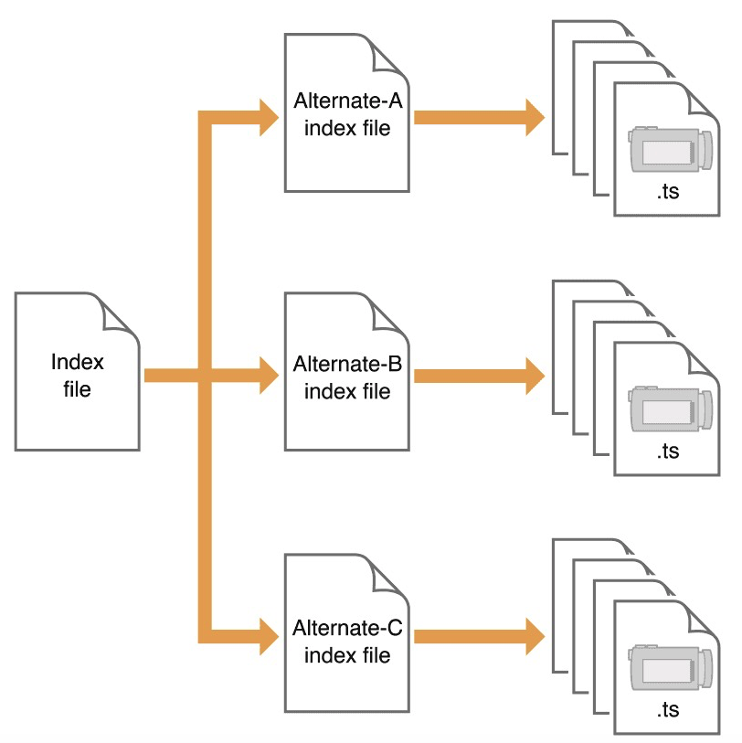

HLS 协议
HTTP Live Streaming，苹果公司提出的基于 HTTP 的流媒体网络传输协议。
HLS其实是一个“文本协议”，而并不是一个流媒体协议。HLS的数据是切片文件，并非连续流。
概述
服务端将媒体流按照不同的码率切成不同的小片段后进行传输，客户端播放流时，根据自身的带宽及性能限制，选择合适的码率进行下载播放。在会话开始时，客户端会先下载描述视频流的元数据（m3u8索引文件），视频文件存放在 .ts 文件中。
对比RTMP
RTMP 协议使用非标准的 HTTP 接口传输数据，在一些特殊的网络环境下可能会被防火墙屏蔽。而 HLS 由于使用的 HTTP 协议传输数据，一般不会被防火墙屏蔽（80端口）。
负载均衡，RTMP 是有状态协议，很难对视频服务器进行平滑扩展，需要维护每一个播放视频流的状态。而 HLS 基于无状态协议（HTTP），客户端只是按照顺序下载存储在服务器的TS文件即可。
此外，HLS实现了码率自适应。
HLS主要用于拉流，RTMP可以用于拉流或推流。
HLS 主要由三部分组成：服务器组件、分发组件、客户端软件。
媒体流从设备传输到 Server 可以通过任意方式传输

Media encoder
应该将音频跟视频编码成对应的格式，一般就是AAC跟H264。
Stream Segment
这个模块应该是将文件切片了，基于MPEG-2的封装格式，也叫MPEG-TS

index 文件就是 m3u8 文件，先下载一级 index 文件（master_playlist.m3u8），里面记录了不同码率对应的二级索引文件（Alternate-A、B、C），然后根据网络带宽等因素，下载指定的二级索引文件，而二级索引文件则是记录了TS文件的下载地址，这样就可以拿到完整的视频流了。
master_playlist.m3u8 字段
#EXTM3U // 第一行标示
#EXT-X-VERSION:3 // 协议版本，不存在说明是版本1
#EXT-X-STREAM-INF:PROGRAM-ID=0,BANDWIDTH=354986,RESOLUTION=320x180 //流信息
#EXTM3U
#EXT-X-STREAM-INF:PROGRAM-ID=1,BANDWIDTH=1064000
1000kbps.m3u8
#EXT-X-STREAM-INF:PROGRAM-ID=1,BANDWIDTH=564000
500kbps.m3u8
#EXT-X-STREAM-INF:PROGRAM-ID=1,BANDWIDTH=282000
250kbps.m3u8
#EXT-X-STREAM-INF:PROGRAM-ID=1,BANDWIDTH=2128000
2000kbps.m3u8
二级文件 v.f230.m3u8 字段
v.f210.m3u8
#EXT-X-STREAM-INF:PROGRAM-ID=0,BANDWIDTH=633293,RESOLUTION=640x360
v.f220.m3u8
#EXT-X-STREAM-INF:PROGRAM-ID=0,BANDWIDTH=1198319,RESOLUTION=1280x720
v.f230.m3u8
#EXTM3U
#EXT-X-PLAYLIST-TYPE:VOD
#EXT-X-TARGETDURATION:10 // TS文件视频最大时长
#EXTINF:10, // TS文件视频时长
2000kbps-00001.ts
#EXTINF:10,
2000kbps-00002.ts
... ...
#EXTINF:10,
2000kbps-00099.ts
#EXTINF:10,
2000kbps-00100.ts
#ZEN-TOTAL-DURATION:999.66667
#ZEN-AVERAGE-BANDWIDTH:2190954
#ZEN-MAXIMUM-BANDWIDTH:3536205
#EXT-X-ENDLIST //视频结束标志，有这个值说明是非直播流
#EXT-X-MEDIA-SEQUENCE:0 //序列号
#EXT-X-KEY:METHOD=AES-128 //是否加密，取值（NONE、AES-128、SAMPLE-AES），表示当前标签到下一个标签之间用这种加密方式
播放模式
点播VOD
可以直接获取所有一级二级静态文件，也就可以访问任意TS文件。
Live直播
实时动态生成二级 index 文件。